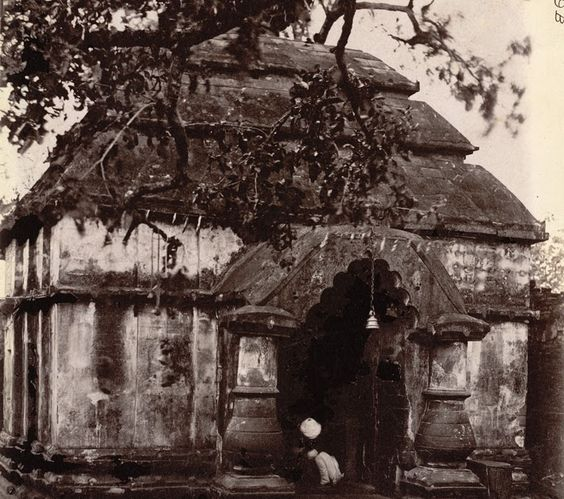

About Paschim Bardhaman
Howrah, located just across the Hooghly River from Kolkata, is a major transportation hub and has industrial significance. It's also home to the iconic Howrah Bridge, a symbol of Kolkata, which connects Howrah with Kolkata.

